Sistemas Exoplanetarios
Donde ya hay un planeta, probablemente hay más. Esta clase trata de sistemas con varios planetas: cómo se les arranca la señal a los datos (periodograma, MCMC, residuos), por qué sus órbitas tienen que ser estables, qué papel juegan las resonancias y el caos, y cómo la astrometría, los tránsitos y las TTV revelan compañeros ocultos.
Si quieres pescar, te pones donde ya hay peces. La misma lógica guía la búsqueda de exoplanetas: donde ya se detectó un planeta, lo más probable es que haya más. Por eso esta clase abandona el planeta solitario y mira el sistema completo. La idea de fondo es que encontrar planetas nuevos no es fácil ni barato: hay que «masajear» los datos. Cada punto de una curva de velocidad radial esconde un espectro, una calibración Doppler y la resta de los movimientos de la Tierra, el Sol y la estrella; recién entonces aparece el bamboleo planetario. Para hallar la periodicidad usamos el periodograma (una transformada de Fourier), para ajustar la órbita usamos cadenas de Markov (MCMC), y los residuos de ese ajuste son la pista del siguiente planeta. Sobre esa solución imponemos física: la configuración debe ser dinámicamente estable (lo verificamos con simulaciones del problema de N cuerpos), y muchas veces las protege una resonancia —una conmensurabilidad de números enteros entre los períodos, como la de Plutón–Neptuno o las lunas galileanas—. Cierre: astrometría (Gaia), tránsitos múltiples (TRAPPIST-1), TTV y la estadística de Kepler, que dice que casi la mitad de sus planetas viven en sistemas múltiples.
Qué es un sistema exoplanetario (y por qué buscarlos)
Un sistema = varios planetas en torno a la misma estrella. Donde hay uno, conviene seguir mirando.
Tras dos clases dedicadas a detectar y a medir exoplanetas, esta se enfoca en los sistemas planetarios: configuraciones con muchos planetas, como el Sistema Solar. La estrategia es eficiente: si una estrella ya muestra un planeta que transita, sabemos que la vemos «de canto», y es muy probable que otros planetas del mismo sistema también transiten (las órbitas tienden a ser coplanares). Ese segundo planeta puede ser «más valioso»: más pequeño, más lejano, quizás en la zona habitable.
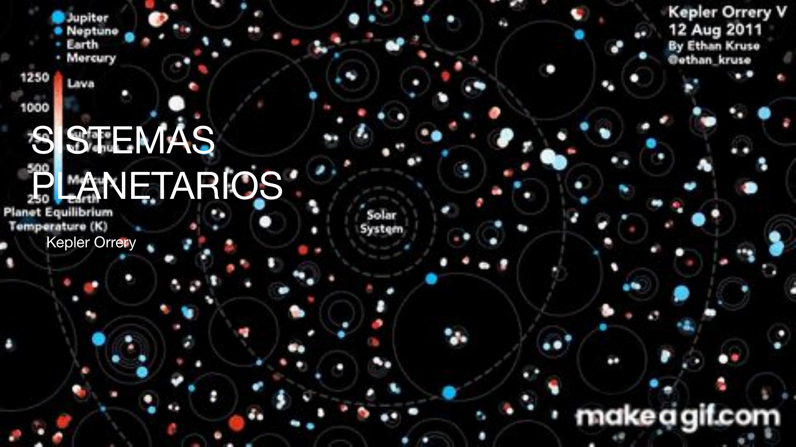
Es muestreo dirigido por evidencia: en lugar de explorar el espacio de estrellas a ciegas, concentramos el esfuerzo donde la probabilidad a posteriori de encontrar más planetas es alta (ya hay uno confirmado). Es la misma idea de un crawler que prioriza vecinos de un nodo con señal, o de una búsqueda que explota una región prometedora antes de seguir explorando.
Panorama: métodos de detección y clasificación
Velocidad radial y tránsitos llevan la delantera; el resto aporta vistas sin sesgo o muy específicas.
El «árbol» de métodos de detección reúne familias dinámicas (velocidad radial, astrometría, timing/pulsares), fotométricas (tránsitos, imagen directa, microlente) e indirectas/misceláneas. Las dos dominantes son la velocidad radial (RV) y los tránsitos. Algunos métodos «esotéricos» como el microlente gravitacional son valiosos porque ven planetas con poco sesgo (no exigen cercanía ni orientación especial).
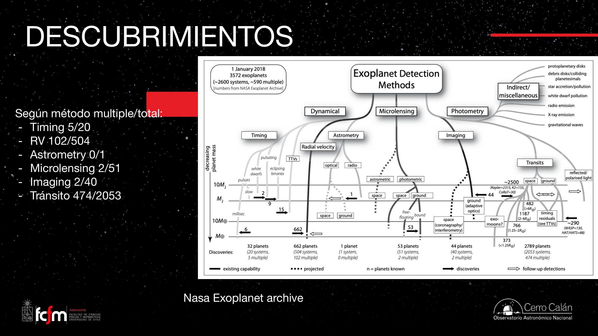
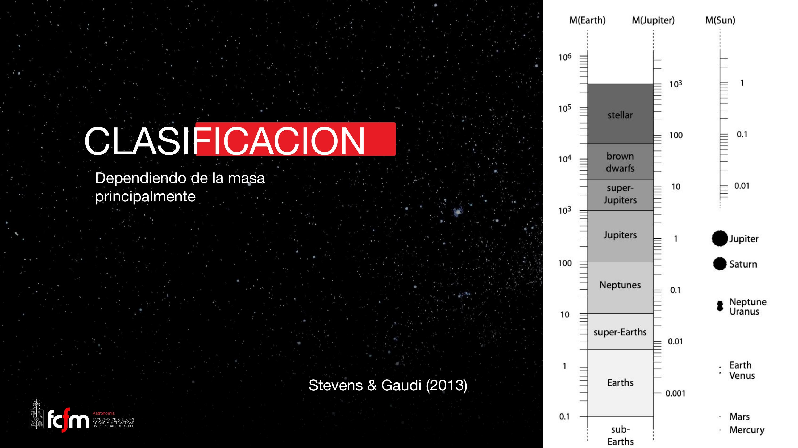
Casi todo aquí se grafica en logaritmo: masas que cubren ~7 órdenes de magnitud (de Mercurio a una estrella) solo caben en una escala log. Igual que medir tamaños de archivo o latencias que van de bytes a gigabytes: el eje lineal es inútil; el log convierte «multiplicar por 10» en «un paso constante».
Velocidad radial: de la órbita a la curva
La forma de la curva de RV depende fuertemente de la excentricidad y de cómo está orientada la elipse.
En RV no vemos el planeta: vemos a la estrella bambolearse. Si la órbita es circular (), la velocidad radial es una sinusoide limpia: la estrella se acerca (corrimiento al azul, ) y se aleja (al rojo, ). Pero al aumentar la excentricidad, la curva se deforma muchísimo, y su forma también depende del ángulo (cómo está «parada» la elipse respecto al observador).
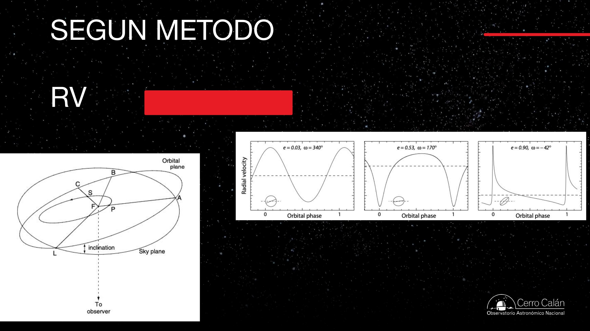
La 2.ª ley de Kepler (áreas iguales en tiempos iguales) obliga al planeta a moverse veloz cerca de la estrella y lentísimo en el afelio. En una órbita muy excéntrica, casi todo el tiempo «no pasa nada» y, de golpe, hay un tirón de velocidad. Si tus observaciones caen fuera de ese instante, te lo pierdes: hay que tener la suerte (o la planificación) de muestrear justo el periastro.
Una vez ajustada la órbita, la semiamplitud de la curva permite estimar la masa mínima del planeta (mínima porque la inclinación es desconocida en RV puro):
El censo: sistemas simples vs. múltiples
Mirar solo planetas «solitarios» distorsiona el panorama; la familia entera cuenta otra historia.
Si distribuimos los planetas por su semieje mayor (distancia media a la estrella), aparecen dos poblaciones distintas. Los sistemas con un solo planeta conocido se concentran muy cerca de la estrella (los hot Jupiters) y en un pico cerca de . En cambio, los sistemas múltiples reparten sus planetas de forma más plana y uniforme, pareciéndose más al Sistema Solar: «hay un paradero de planetas cada cierto trecho».
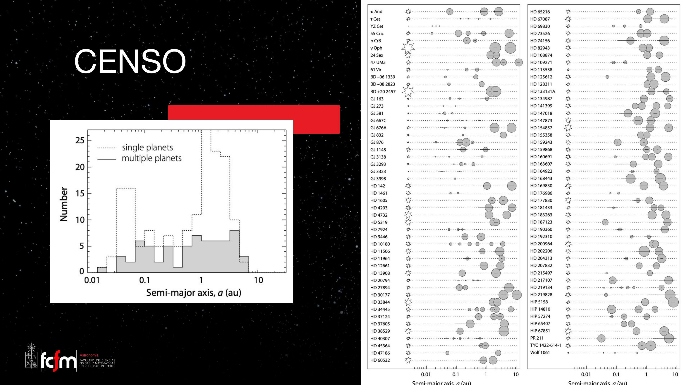
¿La «escasez» de planetas a ciertas distancias es real o es un eco del método? Una distribución más plana (como la de los múltiples) sugiere que muchos planetas a esas distancias están escondidos en los sistemas que creemos simples. Mirar la familia completa corrige la imagen: el planeta solitario casi nunca está solo.
Cazar la señal: periodograma y Fourier
Antes de ajustar nada hay que conocer el período. La herramienta es una transformada de Fourier.
Cada punto de una curva de RV cuesta una noche de telescopio: apuntar, tomar un espectro, medir el corrimiento Doppler de una línea de absorción (p. ej. comparándola con líneas telúricas conocidas) y restar el movimiento de la Tierra, del Sol y el movimiento medio de la estrella. Lo que queda es el bamboleo. Pero para doblar esos puntos dispersos en el tiempo y ver la órbita, primero hay que adivinar el período.
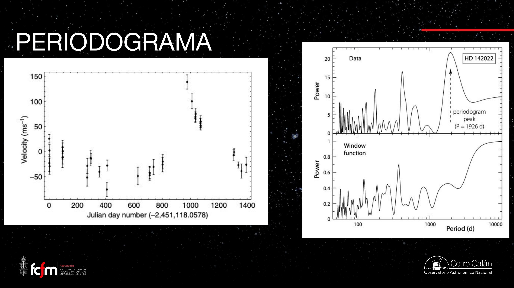
El periodograma es esencialmente una transformada de Fourier de una señal muestreada irregularmente: descompone la serie temporal en frecuencias y revela cuánta «potencia» hay en cada período. Es el mismo Fourier de la interferometría y de las frecuencias espaciales de una imagen: bajas frecuencias = los trazos gruesos que ves de lejos; altas frecuencias = los detalles finos.
El profesor lo ilustra con compresión JPEG (descarta altas frecuencias y la imagen «se ve igual» de lejos) y con esas imágenes híbridas que de lejos muestran un rostro (bajas frecuencias) y de cerca otro (altas frecuencias). Para un ingeniero informático, el periodograma es literalmente análisis espectral: FFT, ventanas, fugas espectrales (window function) y detección de picos sobre ruido.
Ajuste, MCMC y residuos → el 2.º planeta
El modelo tiene muchos parámetros; se exploran con cadenas de Markov, y los residuos delatan otro planeta.
Conocido el período, hay que ajustar un modelo mucho más rico que una recta: parámetros orbitales completos, masa, excentricidad… El espacio de parámetros tiene 6, 10 o hasta 60 dimensiones. Se explora «al azar guiado» con cadenas de Markov (MCMC): se parte de parámetros cualesquiera, se da un paso aleatorio, y si mejora el ajuste te quedas… pero a veces aceptas un paso peor a propósito, para no quedar atrapado en un óptimo local.
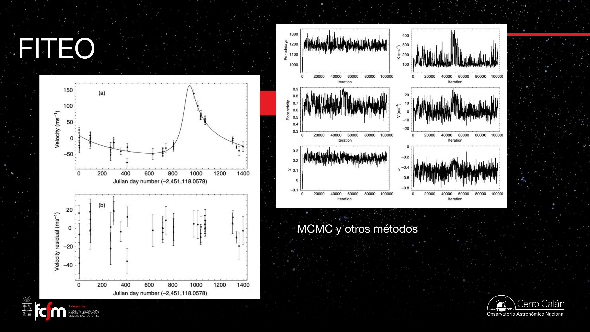
«Para llegar a La Serena a veces hay que partir hacia el sur.» Aceptar pasos peores con cierta probabilidad es exactamente la idea de Metropolis–Hastings / simulated annealing: escapar de mínimos locales para alcanzar el óptimo global. Además aparece la degeneración: muchas combinaciones de parámetros producen casi la misma curva. Más datos (mejor cobertura temporal) rompen esa degeneración, igual que más restricciones reducen el espacio de soluciones de un sistema sub-determinado.
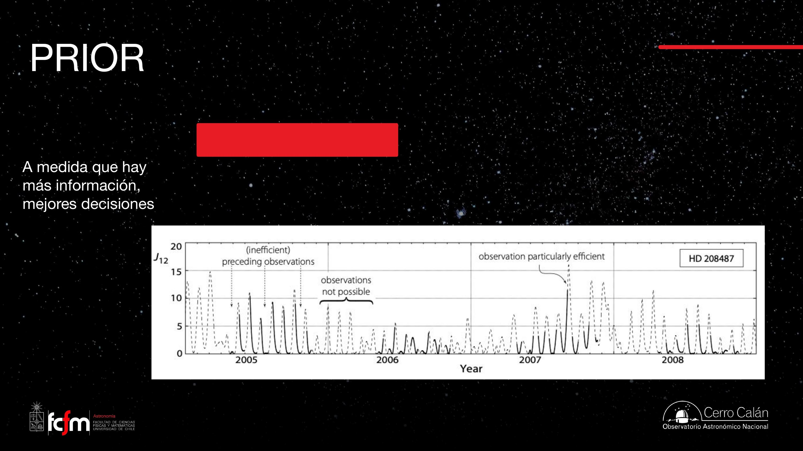
Lo crucial para los sistemas múltiples son los residuos: lo que sobra tras restar el movimiento de la estrella y el del primer planeta. Si en esos residuos aparece otra periodicidad, hay un segundo planeta. Así se descubren compañeros en sistemas de velocidad radial — y por eso siempre interesa seguir observando una estrella que ya tiene un planeta.
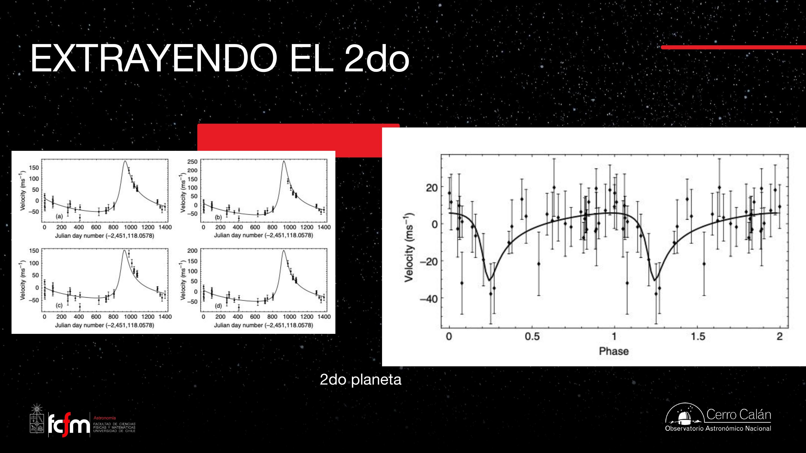
Estabilidad dinámica: la foto del camello
Una solución no solo debe ajustar los datos: la configuración tiene que poder sobrevivir en el tiempo.
Ajustar los datos no basta. A los físicos les importa que la configuración sea estable. La analogía del profesor: si fotografías un camello y aparece flotando, no concluyes «estaba saltando justo»; concluyes que algo anda mal. Igual con un sistema planetario: sería rarísimo pillarlo justo en el breve instante en que se está desarmando. Por eso, entre todas las soluciones que ajustan la RV, descartamos las dinámicamente inestables.
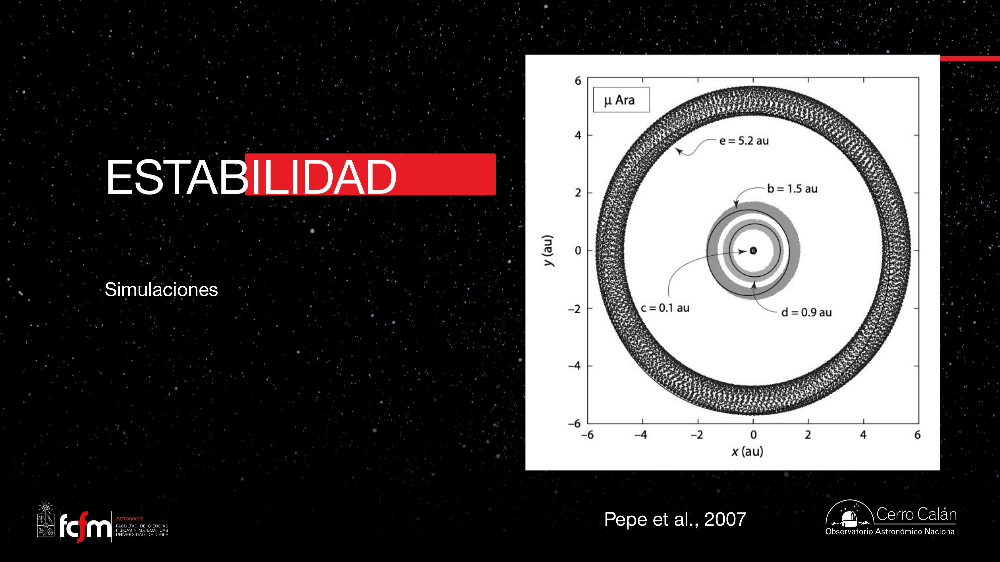
Con varios planetas, las interacciones mutuas importan: es el problema de los tres (o N) cuerpos, que no tiene solución analítica general. Se ataca por simulación numérica. Criterio práctico (heredado del Sistema Solar): si la configuración sobrevive ~10.000 años/órbitas sin desarmarse, la consideramos estable. Es una línea de Kármán dinámica: un umbral convencional pero útil. Si la mitad de las simulaciones expulsa un planeta, esa solución se descarta.
La estabilidad actúa como restricción (constraint) y regularizador: poda regiones del espacio de parámetros que ajustan los datos pero violan la física. Es como un test de propiedades en un solver: la solución no solo debe minimizar el error, también pasar validaciones (aquí, sobrevivir una integración numérica de N cuerpos).
Resonancias: relojería de números enteros
Cuando los períodos guardan una razón de enteros, los planetas se sincronizan: caos domesticado.
Una resonancia de movimiento medio es una conmensurabilidad: una relación de números enteros entre los períodos orbitales. El ejemplo clásico son las lunas galileanas de Júpiter, con Ío : Europa : Ganímedes en 1 : 2 : 4. Esa sincronía las calienta por marea (los volcanes de Ío, el océano interior de Europa). En exoplanetas, GJ 876 tiene planetas en resonancia (sus períodos ≈ 30,4 : 61,1 : 126,6 días, cercanos a 1:2:4).
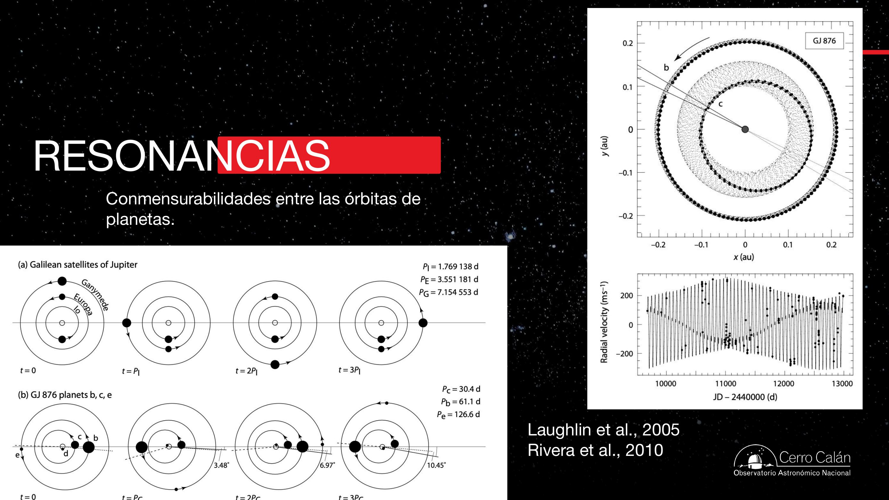
Resonancia = darle el empujón en el momento justo, una y otra vez: como el abuelo que columpia a su nieta y, al sincronizar, la lanza por los aires. Esa misma sincronía puede expulsar material… o protegerlo. Plutón cruza la órbita de Neptuno, pero su resonancia 3:2 (por cada 3 vueltas de Neptuno, Plutón da 2) garantiza que nunca se encuentren cerca: la resonancia lo protege. Una fracción importante de los sistemas exoplanetarios muestra resonancias, posiblemente por esta protección.
El caos gravitacional es sensibilidad exponencial a las condiciones iniciales. Una pelota redonda que rebota se desvía poco si la pateas un poco distinto; pero una pelota de rugby (forma de limón) puede salir disparada hacia lados opuestos ante un cambio mínimo: las trayectorias divergen exponencialmente. En gravedad, un encuentro cercano con Júpiter amplifica diferencias diminutas — y puede eyectar un planeta.
Evolución y migración: el modelo de Niza
Los planetas no nacen donde los vemos: migran dentro del disco y pueden quedar atrapados en resonancia.
Los planetas se forman en un disco protoplanetario e interactúan con planetesimales (rocas más chicas). Al dispersarlos, los planetas migran: un Júpiter que arroja material hacia afuera se mueve hacia adentro, y al alcanzar una resonancia puede quedar atrapado. Estas capturas explican por qué tantos sistemas exhiben resonancias.
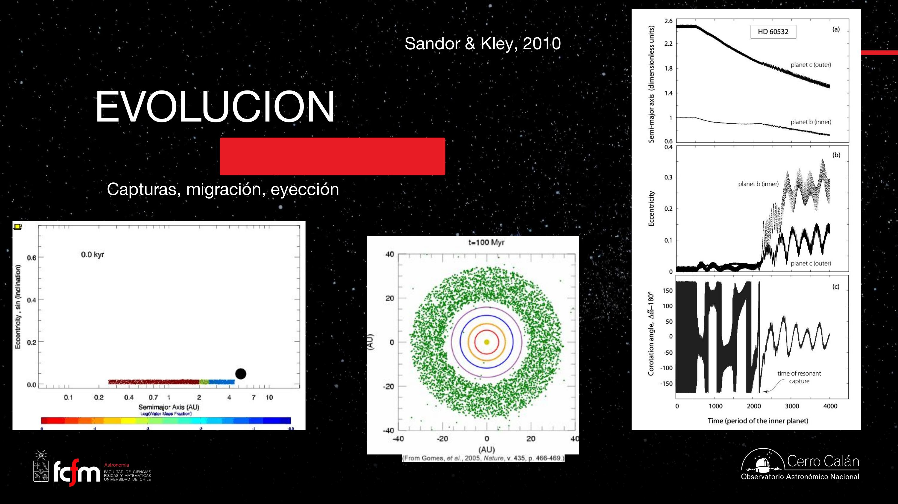
El modelo de Niza (por el observatorio de Niza) parte con Júpiter, Saturno, Urano y Neptuno cerca de una resonancia 1:2 entre Júpiter y Saturno. Tras ~500 millones de años, esa resonancia «se activa» y provoca un reordenamiento caótico (¡Urano y Neptuno pueden intercambiar lugar!). Ese gatillo tardío encajaría con el Bombardeo Masivo Tardío registrado en la Luna ~700 Ma después de la formación, que pudo traer hielo y volátiles (agua) desde el sistema solar externo hacia los planetas rocosos.
Estas simulaciones son caóticas: misma física, condiciones iniciales casi idénticas → resultados muy distintos. Por eso se corren miles y se conserva la que termina pareciéndose al objetivo (p. ej. recrear Mercurio–Venus–Tierra–Marte). Es un Monte Carlo con selección a posteriori: hay que ser conscientes del sesgo de supervivencia al interpretar «la simulación que funcionó».
Astrometría: el baile del baricentro (Gaia)
Medir con extrema precisión la posición de la estrella revela el tirón de sus planetas.
La astrometría mide la posición de la estrella en el cielo con precisión exquisita. Como los planetas tiran de ella, la estrella traza un bucle en torno al baricentro del sistema. La misión Gaia mide posiciones a nivel de microsegundos de arco, así que puede detectar este movimiento reflejo para muchas estrellas.
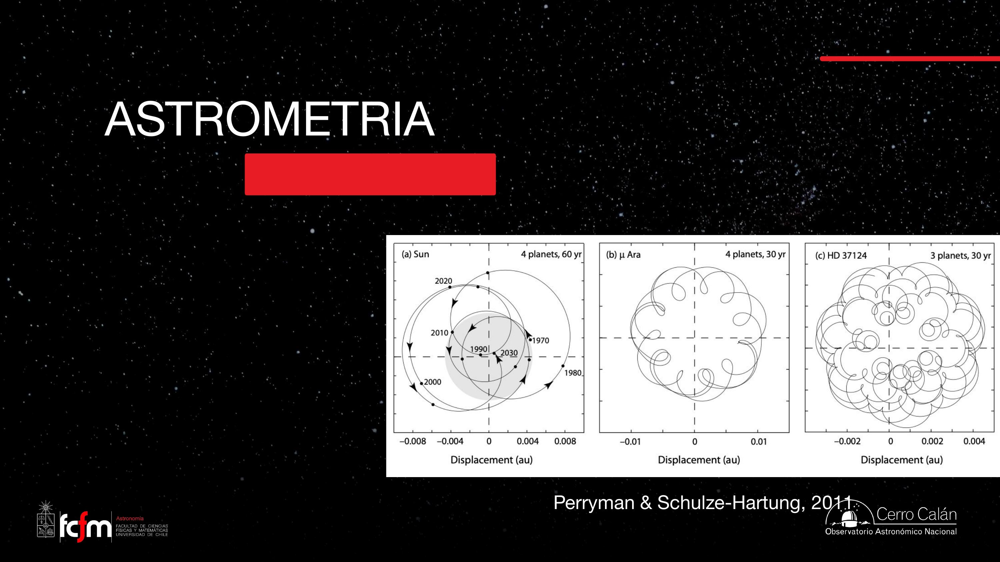
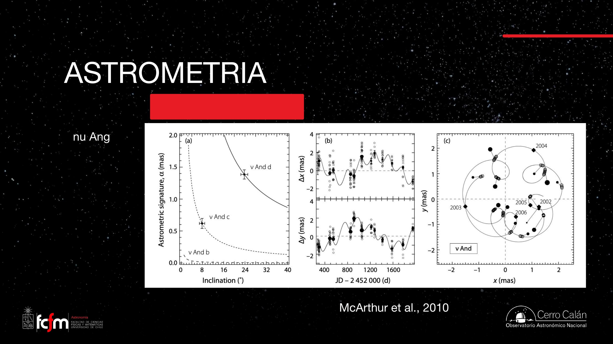
En el Sistema Solar, ~99,7% del momento angular está en los planetas, no en el Sol. Al colapsar la nube, cualquier rotación se amplifica (como una patinadora que junta los brazos), define el eje y el plano del disco y, por tanto, el plano (coplanar) en que nacen los planetas. Comparar el momento angular de estrellas con y sin planetas puede ayudar a delatar compañeros ocultos.
Tránsitos: detrending y sistemas múltiples
La curva de luz cruda esconde los tránsitos; hay que "masajear" los datos para revelarlos.
En un tránsito, el planeta bloquea parte de la luz de la estrella. Pero la curva de luz cruda está dominada por variaciones instrumentales y estelares (manchas, condiciones de observación). Hay que hacer detrending: modelar y restar esa tendencia principal para que los pequeños baches de los tránsitos emerjan.
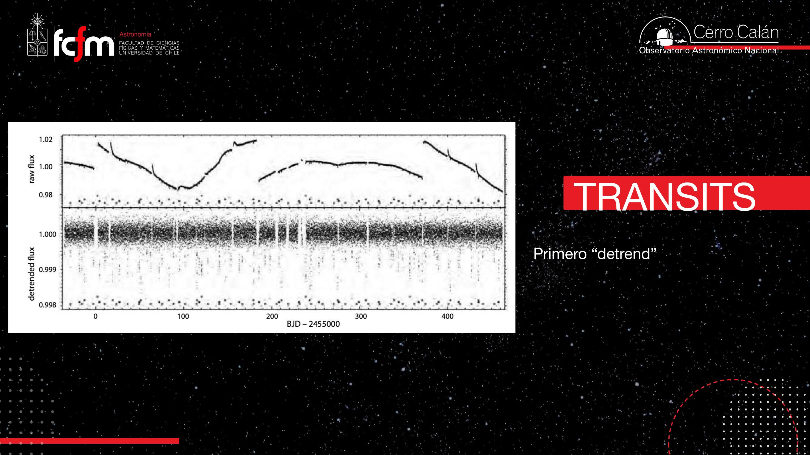
Cuando un sistema es coplanar y lo vemos de canto, es probable que varios planetas transiten. El caso emblemático es TRAPPIST-1: siete planetas rocosos en torno a una enana roja fría (~2500–3000 K). Como la estrella es pequeña, cada tránsito bloquea una fracción mayor de luz y se ve mejor.
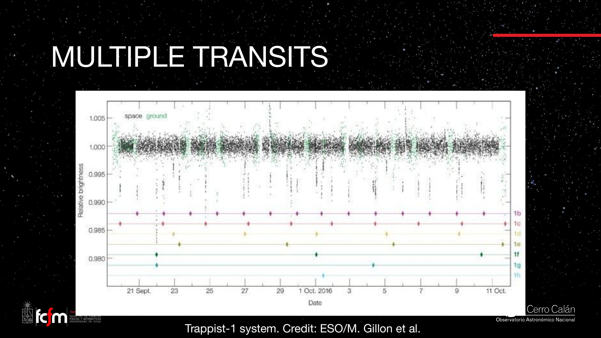
El tránsito da el radio (relativo al estelar) y la inclinación (); la velocidad radial da la masa (ya no solo mínima, porque conocemos ). Con masa y radio se obtiene la densidad ⇒ rocoso, oceánico o gaseoso. Por eso el «sweet spot» es un planeta que transita y además tiene RV medible.
TTV: variaciones en el tiempo de tránsito
Un planeta invisible delata su presencia adelantando o atrasando los tránsitos de otro.
El método de Transit Timing Variation (TTV) detecta planetas que no vemos transitar. Si un planeta perturbador tira de la estrella (o del planeta que sí transita), el instante exacto de cada tránsito deja de ser perfectamente periódico: a veces llega un poco antes, a veces un poco después.
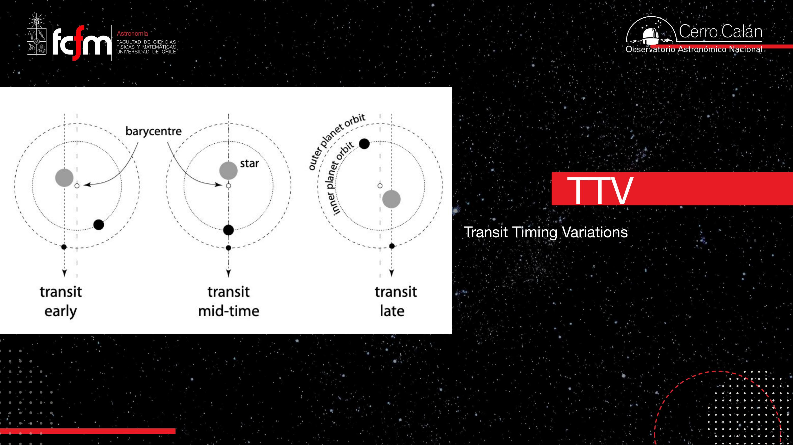
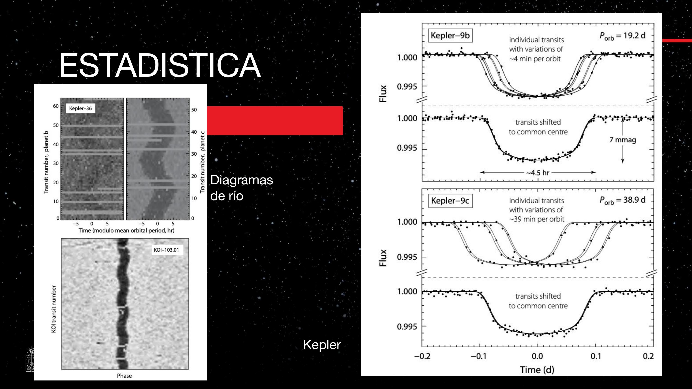
TTV es detección de jitter de fase: comparas los tiempos de llegada medidos contra un reloj de período constante y mides la desviación (un diagrama O−C, «observado menos calculado»). El patrón de esas desviaciones codifica la masa y la órbita del perturbador, igual que el jitter en una señal periódica delata una perturbación externa en el sistema.
Estadística, formación y configuraciones exóticas
Casi la mitad de los planetas de Kepler viven en sistemas múltiples; y hay arquitecturas mucho más raras.
El mensaje estadístico central: encontrar planetas nuevos no es fácil — hay que masajear datos de RV, tener suerte con un tránsito, o acumular muchísimos tránsitos para ver TTV. Pero Kepler, con su cadencia regular, mostró que casi la mitad de sus planetas están en sistemas múltiples: si uno transita, es muy probable que sus hermanos también lo hagan.
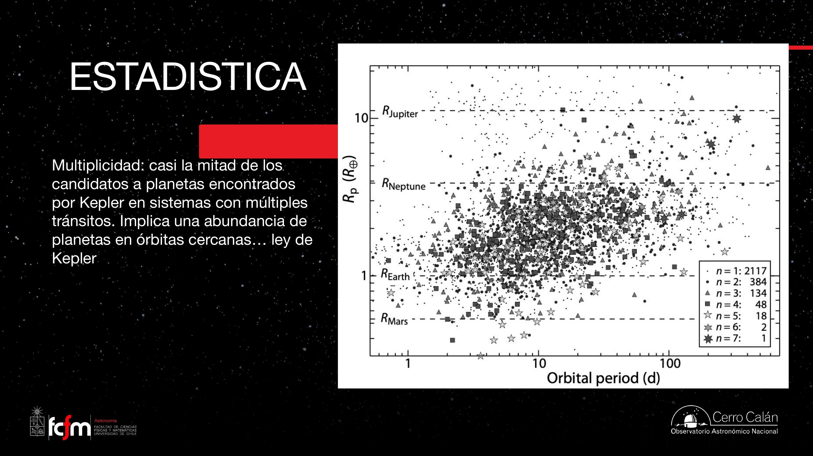
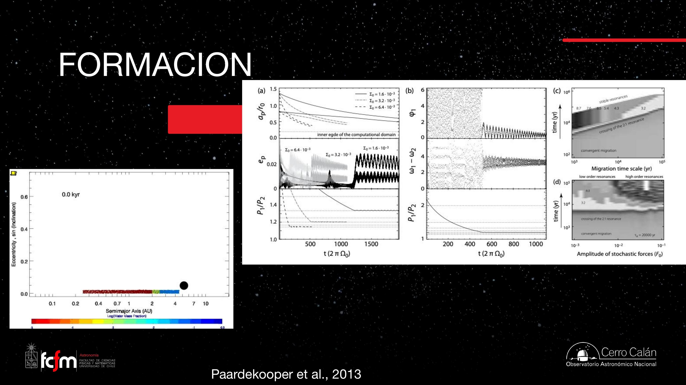
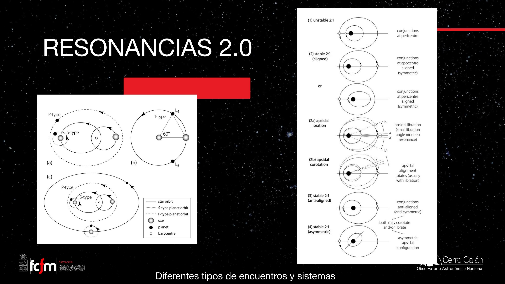
El Sistema Solar tiene órbitas casi circulares, coplanares y bien espaciadas (rocosos cerca, gigantes tras la línea de hielo). Pero ese arreglo «bien portado» no parece ser lo común… o no tenemos aún las herramientas para verlo con nitidez en otros sistemas. La pregunta abierta —relevante para la habitabilidad— es si eventos caóticos como el del modelo de Niza (que trajo agua) son necesarios para una «Tierra 2.0».
Lección central de la clase: hallar planetas en un sistema es un trabajo de procesamiento de señales y dinámica — periodograma, MCMC, residuos, estabilidad, resonancias. Todo método tiene su sesgo (Kepler aún no ve los «Júpiter lejanos»). La próxima clase (última del módulo) cerrará con sistemas específicos. El Módulo III retomará la formación planetaria y los discos protoplanetarios en detalle.
Conceptos clave
Tabla de repaso rápido.
| Concepto | Qué es / valor | Por qué importa |
|---|---|---|
| Sistema exoplanetario | Varios planetas en torno a una estrella | Donde hay uno, probablemente hay más (coplanaridad) |
| Curva de RV y excentricidad | Sinusoide si ; pico abrupto si alta | 2.ª ley de Kepler: rápido en periastro, lento en apoastro |
| Masa mínima (RV) | a partir de | Solo cota inferior: el tránsito fija y da la masa real |
| Periodograma | Transformada de Fourier de la serie de RV | Encuentra el período (pico) antes de ajustar |
| Folding de fase | Doblar los datos módulo el período | Revela la órbita y permite ver la señal coherente |
| MCMC | Cadenas de Markov; aceptan pasos peores | Exploran espacios de 6–60 parámetros sin caer en óptimos locales |
| Residuos | Datos − modelo del 1.er planeta | Una periodicidad en el residuo = 2.º planeta |
| Estabilidad dinámica | Simulación N cuerpos; criterio ~10.000 años | Descarta soluciones que ajustan pero no sobreviven |
| Resonancia (conmensurabilidad) | Razón de enteros entre períodos (1:2:4, 3:2) | Sincroniza, calienta (Ío) y protege (Plutón–Neptuno) |
| Caos | Divergencia exponencial (pelota de rugby) | Encuentros cercanos pueden eyectar planetas |
| Migración / modelo de Niza | Planetas se mueven en el disco; gatillo resonante | Explica capturas resonantes y el agua de la Tierra |
| Astrometría (Gaia) | Posición a microsegundos de arco; «roseta» | El baile del baricentro delata planetas |
| Detrending de tránsitos | Restar la tendencia de la curva de luz | Revela los baches de los tránsitos sobre el ruido |
| TTV | Tránsitos que se adelantan/atrasan (O−C) | Detecta planetas que no transitan |
| Multiplicidad de Kepler | ~½ de los planetas en sistemas múltiples | «Ley de Kepler»: abundancia en órbitas cercanas |
| Binarias: S / P / T-type | Órbita alrededor de una, ambas, o troyana | Arquitecturas exóticas, a menudo caóticas |
Exámenes de práctica
10 exámenes de 5 preguntas (3 de alternativas autocorregibles + 2 de respuesta escrita).